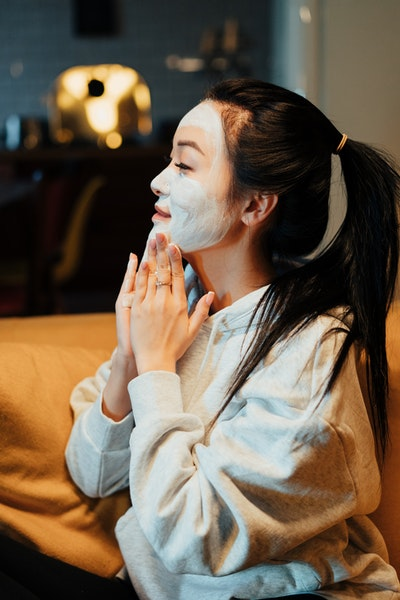

Osteoporosis
I have fully recovered from Osteoporosis / Mar 19, 2022

I had been suffering from osteoporosis for the last 2 years. I went for medical treatment but couldn't find the adequate results....Of course it gave releifs from the my pain but was not the permanent solution for it. So one day i was scrolling all websites in search for the best natural treatment for my disease. And i came here started my daily exercises and diet according to their courses and now it's been a year and i am perfectly alright. I would like to thank "Health&Fitness" for this.
Oranges
Added Oranges to my daily diet / Nov 30, 2019

I finally added oranges to my diet. I was previously told to do so but i just never liked the taste. But after finding out that citrus fruits are good of people with osteoporosis, i decided that my health comes first and i should add it.
Importance of Rest
Neck Pain and Back Pain / Jul 26, 2019

Today I experienced Neck Pain and back Pain even after practicing Yoga everyday. And that was the problem! I was not giving my muscles enough time to recover from a period of practicing Asanas.
My First Yoga Class
A lesson in spirituality / Dec 5, 2018

At first, I thought that i should have joined a session that is more dynamic and engaging, but today I have learnt that the dynamic and calm nature of Yoga is linked to spirituality
About Me
Hi Everyone! My name is Praomook. I am 30 years old and I am Thai. I did my Masters in Chemical Engineering from NUS. I have started my journey with Health&Fitness from 2018.
Popular Posts
Importance of Rest